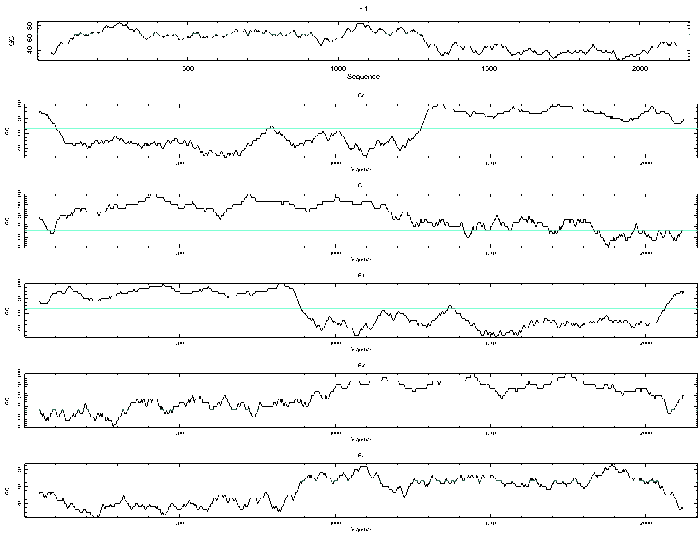

|
|
wobble |
For each of the six possible translation frames, this plots a graph showing the percentage of 'G' and 'C' bases in the third position of codons in the frame within a window that is moved over the sequence.
Bases other than 'G' and 'C' can be chosen with the -bases option.
The Mean of the third base percentage value is drawn as a horizontal line across the plots.
Here is a sample session with wobble. The example sequence is from Pseudomonas aeruginosa, which has a high G+C content and a very biased third codon position (if it can be G or C, it usually is).
% wobble Wobble base plot Input sequence: tembl:paamir Graph type [x11]: cps Output file [paamir.wobble]: Created wobble.ps |
Go to the input files for this example
Go to the output files for this example
Mandatory qualifiers:
[-sequence] sequence Sequence USA
-graph xygraph Graph type
-outf outfile Output file name
Optional qualifiers:
-window integer Window size in codons
Advanced qualifiers:
-bases string Bases used
Associated qualifiers:
"-sequence" related qualifiers
-sbegin1 integer First base used
-send1 integer Last base used, def=seq length
-sreverse1 boolean Reverse (if DNA)
-sask1 boolean Ask for begin/end/reverse
-snucleotide1 boolean Sequence is nucleotide
-sprotein1 boolean Sequence is protein
-slower1 boolean Make lower case
-supper1 boolean Make upper case
-sformat1 string Input sequence format
-sopenfile1 string Input filename
-sdbname1 string Database name
-sid1 string Entryname
-ufo1 string UFO features
-fformat1 string Features format
-fopenfile1 string Features file name
"-graph" related qualifiers
-gprompt boolean Graph prompting
-gtitle string Graph title
-gsubtitle string Graph subtitle
-gxtitle string Graph x axis title
-gytitle string Graph y axis title
-goutfile string Output file for non interactive displays
-gdirectory string Output directory
"-outf" related qualifiers
-odirectory string Output directory
General qualifiers:
-auto boolean Turn off prompts
-stdout boolean Write standard output
-filter boolean Read standard input, write standard output
-options boolean Prompt for required and optional values
-debug boolean Write debug output to program.dbg
-acdlog boolean Write ACD processing log to program.acdlog
-acdpretty boolean Rewrite ACD file as program.acdpretty
-acdtable boolean Write HTML table of options
-verbose boolean Report some/full command line options
-help boolean Report command line options. More
information on associated and general
qualifiers can be found with -help -verbose
-warning boolean Report warnings
-error boolean Report errors
-fatal boolean Report fatal errors
-die boolean Report deaths
|
| Mandatory qualifiers | Allowed values | Default | |
|---|---|---|---|
| [-sequence] (Parameter 1) |
Sequence USA | Readable sequence | Required |
| -graph | Graph type | EMBOSS has a list of known devices, including postscript, ps, hpgl, hp7470, hp7580, meta, colourps, cps, xwindows, x11, tektronics, tekt, tek4107t, tek, none, null, text, data, xterm, png | EMBOSS_GRAPHICS value, or x11 |
| -outf | Output file name | Output file | <sequence>.wobble |
| Optional qualifiers | Allowed values | Default | |
| -window | Window size in codons | Integer 1 or more | 30 |
| Advanced qualifiers | Allowed values | Default | |
| -bases | Bases used | Any string is accepted | GC |
ID PAAMIR standard; DNA; PRO; 2167 BP.
XX
AC X13776; M43175;
XX
SV X13776.1
XX
DT 19-APR-1989 (Rel. 19, Created)
DT 17-FEB-1997 (Rel. 50, Last updated, Version 22)
XX
DE Pseudomonas aeruginosa amiC and amiR gene for aliphatic amidase regulation
XX
KW aliphatic amidase regulator; amiC gene; amiR gene.
XX
OS Pseudomonas aeruginosa
OC Bacteria; Proteobacteria; gamma subdivision; Pseudomonadaceae; Pseudomonas.
XX
RN [1]
RP 1167-2167
RA Rice P.M.;
RT ;
RL Submitted (16-DEC-1988) to the EMBL/GenBank/DDBJ databases.
RL Rice P.M., EMBL, Postfach 10-2209, Meyerhofstrasse 1, 6900 Heidelberg, FRG.
XX
RN [2]
RP 1167-2167
RX MEDLINE; 89211409.
RA Lowe N., Rice P.M., Drew R.E.;
RT "Nucleotide sequence of the aliphatic amidase regulator gene of Pseudomonas
RT aeruginosa";
RL FEBS Lett. 246:39-43(1989).
XX
RN [3]
RP 1-1292
RX MEDLINE; 91317707.
RA Wilson S., Drew R.;
RT "Cloning and DNA seqence of amiC, a new gene regulating expression of the
RT Pseudomonas aeruginosa aliphatic amidase, and purification of the amiC
RT product.";
RL J. Bacteriol. 173:4914-4921(1991).
XX
RN [4]
RP 1-2167
RA Rice P.M.;
RT ;
RL Submitted (04-SEP-1991) to the EMBL/GenBank/DDBJ databases.
RL Rice P.M., EMBL, Postfach 10-2209, Meyerhofstrasse 1, 6900 Heidelberg, FRG.
XX
DR SWISS-PROT; P10932; AMIR_PSEAE.
DR SWISS-PROT; P27017; AMIC_PSEAE.
DR SWISS-PROT; Q51417; AMIS_PSEAE.
[Part of this file has been deleted for brevity]
FT phenotype"
FT /replace=""
FT /gene="amiC"
FT misc_feature 1
FT /note="last base of an XhoI site"
FT misc_feature 648..653
FT /note="end of 658bp XhoI fragment, deletion in pSW3 causes
FT constitutive expression of amiE"
FT conflict 1281
FT /replace="g"
FT /citation=[3]
XX
SQ Sequence 2167 BP; 363 A; 712 C; 730 G; 362 T; 0 other;
ggtaccgctg gccgagcatc tgctcgatca ccaccagccg ggcgacggga actgcacgat 60
ctacctggcg agcctggagc acgagcgggt tcgcttcgta cggcgctgag cgacagtcac 120
aggagaggaa acggatggga tcgcaccagg agcggccgct gatcggcctg ctgttctccg 180
aaaccggcgt caccgccgat atcgagcgct cgcacgcgta tggcgcattg ctcgcggtcg 240
agcaactgaa ccgcgagggc ggcgtcggcg gtcgcccgat cgaaacgctg tcccaggacc 300
ccggcggcga cccggaccgc tatcggctgt gcgccgagga cttcattcgc aaccgggggg 360
tacggttcct cgtgggctgc tacatgtcgc acacgcgcaa ggcggtgatg ccggtggtcg 420
agcgcgccga cgcgctgctc tgctacccga ccccctacga gggcttcgag tattcgccga 480
acatcgtcta cggcggtccg gcgccgaacc agaacagtgc gccgctggcg gcgtacctga 540
ttcgccacta cggcgagcgg gtggtgttca tcggctcgga ctacatctat ccgcgggaaa 600
gcaaccatgt gatgcgccac ctgtatcgcc agcacggcgg cacggtgctc gaggaaatct 660
acattccgct gtatccctcc gacgacgact tgcagcgcgc cgtcgagcgc atctaccagg 720
cgcgcgccga cgtggtcttc tccaccgtgg tgggcaccgg caccgccgag ctgtatcgcg 780
ccatcgcccg tcgctacggc gacggcaggc ggccgccgat cgccagcctg accaccagcg 840
aggcggaggt ggcgaagatg gagagtgacg tggcagaggg gcaggtggtg gtcgcgcctt 900
acttctccag catcgatacg cccgccagcc gggccttcgt ccaggcctgc catggtttct 960
tcccggagaa cgcgaccatc accgcctggg ccgaggcggc ctactggcag accttgttgc 1020
tcggccgcgc cgcgcaggcc gcaggcaact ggcgggtgga agacgtgcag cggcacctgt 1080
acgacatcga catcgacgcg ccacaggggc cggtccgggt ggagcgccag aacaaccaca 1140
gccgcctgtc ttcgcgcatc gcggaaatcg atgcgcgcgg cgtgttccag gtccgctggc 1200
agtcgcccga accgattcgc cccgaccctt atgtcgtcgt gcataacctc gacgactggt 1260
ccgccagcat gggcggggga ccgctcccat gagcgccaac tcgctgctcg gcagcctgcg 1320
cgagttgcag gtgctggtcc tcaacccgcc gggggaggtc agcgacgccc tggtcttgca 1380
gctgatccgc atcggttgtt cggtgcgcca gtgctggccg ccgccggaag ccttcgacgt 1440
gccggtggac gtggtcttca ccagcatttt ccagaatggc caccacgacg agatcgctgc 1500
gctgctcgcc gccgggactc cgcgcactac cctggtggcg ctggtggagt acgaaagccc 1560
cgcggtgctc tcgcagatca tcgagctgga gtgccacggc gtgatcaccc agccgctcga 1620
tgcccaccgg gtgctgcctg tgctggtatc ggcgcggcgc atcagcgagg aaatggcgaa 1680
gctgaagcag aagaccgagc agctccagga ccgcatcgcc ggccaggccc ggatcaacca 1740
ggccaaggtg ttgctgatgc agcgccatgg ctgggacgag cgcgaggcgc accagcacct 1800
gtcgcgggaa gcgatgaagc ggcgcgagcc gatcctgaag atcgctcagg agttgctggg 1860
aaacgagccg tccgcctgag cgatccgggc cgaccagaac aataacaaga ggggtatcgt 1920
catcatgctg ggactggttc tgctgtacgt tggcgcggtg ctgtttctca atgccgtctg 1980
gttgctgggc aagatcagcg gtcgggaggt ggcggtgatc aacttcctgg tcggcgtgct 2040
gagcgcctgc gtcgcgttct acctgatctt ttccgcagca gccgggcagg gctcgctgaa 2100
ggccggagcg ctgaccctgc tattcgcttt tacctatctg tgggtggccg ccaaccagtt 2160
cctcgag 2167
//
|
Expected GC content in third position = 66.54 |

"Specifying ACG&T is meaningless" - When you use the option -bases to specify the bases to look for, it is pointless to specify looking for all the possible bases as these should add to 100% all the time.
"No bases specified" - Similarly you have to specify some bases to look for otherwise you must plot a 0% line.
| Program name | Description |
|---|---|
| getorf | Finds and extracts open reading frames (ORFs) |
| marscan | Finds MAR/SAR sites in nucleic sequences |
| plotorf | Plot potential open reading frames |
| showorf | Pretty output of DNA translations |
| sixpack | Display a DNA sequence with 6-frame translation and ORFs |
| syco | Synonymous codon usage Gribskov statistic plot |
| tcode | Fickett TESTCODE statistic to identify protein-coding DNA |